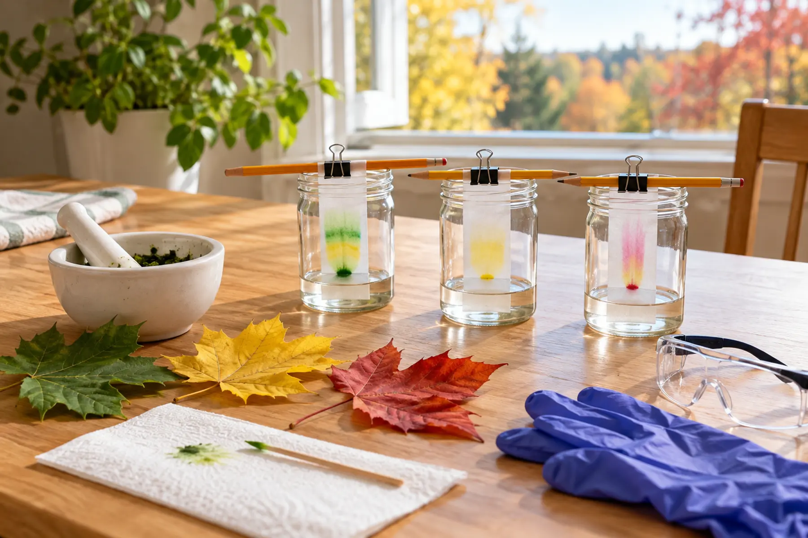

0–8 minutes
Adult clears the surface, opens ventilation, reads the alcohol label and establishes a no-flame zone.
Child job: choose and label leaf samples without touching solvent.
AT HOME · 45–60 MINUTES · AGES 8+ · ADULT LEADS
Crushing a red leaf does not guarantee a perfect red stripe. That is the lesson: prepare the sample, control the solvent line, observe what separates and report the result you actually got.

Paper chromatography can separate some pigments because the solvent moves through paper and carries compounds at different rates. The U.S. Forest Service explains that leaves contain green chlorophyll as well as yellow and orange carotenoids; as chlorophyll breaks down in fall, other colors become visible. The American Chemical Society uses paper chromatography to separate pigments and emphasizes using only a small amount of isopropyl alcohol with safety planning.
Your result will not identify a tree, measure exact pigment concentration or prove why a particular leaf turned red. Species, leaf condition, solvent, paper, sample strength, temperature and technique all matter. A weak smear, one dominant band or no visible separation is still data. Do not add stronger solvents or heat to force a prettier result.
Use a washable, uncluttered surface away from food preparation, medication, candles, pilot lights, heaters, outlets that spark and direct sun. Keep food and drinks out of the work zone. Tie back long hair. Set the jars where they cannot be knocked over and use only a shallow solvent level. If ventilation, supervision or spill control is uncertain, do not use alcohol.
Tear or cut similar-size pieces from each leaf and keep them separate. Crush the first sample until the tissue is broken down. The adult adds a small amount of alcohol—enough to wet the crushed material, not fill the cup—and continues mixing according to the activity plan. Let the pigment extract become visibly colored. Clean and dry the tools or use separate tools before the next leaf so one sample does not contaminate another.
Make a pencil line about 2 centimeters from the bottom of each strip. Place a small concentrated drop of extract on the line. Let it dry and repeat several times on the same spot to build color without creating a wide puddle. Mark the sample name in pencil at the top, never at the solvent end. Ordinary marker ink is a mixture that can separate and confuse the leaf result; the shadow lab offers a chemical-free science night when materials are limited.
The adult pours a shallow layer of alcohol into each stable jar. Suspend the strip so its bottom edge touches the solvent while the pigment spot remains above the liquid. If the spot sits underwater, pigment can dissolve into the jar instead of moving up the paper; reset with a dry strip rather than pretending the run worked. Keep the paper from pressing against the jar wall if that distorts the path.
Watch the solvent front rise. Do not seal a setup in a way that conflicts with the alcohol label or creates pressure. Do not warm it. When the solvent front approaches the upper portion of the paper or the planned time ends, the adult removes the strip with appropriate protection, immediately marks the solvent front in pencil and places the paper on the prepared tray to dry in the controlled ventilated area.
Count visible bands and describe color, width and relative distance. A green sample may show more than one green or yellow band; a yellow leaf may yield a faint result; a red leaf may smear rather than produce a clean red line. The Forest Service source supports the presence of chlorophyll and carotenoids in leaves, but your kitchen result does not chemically identify every band. Use cautious language: “a yellow band traveled farther than the dark green band,” not “this proves it is carotene.”
Create three columns: observed / inferred / still unknown. “Two bands” is observed. “The sample contains more than one mobile pigment” is an inference. Exact compound identity is still unknown without validated standards and methods. This same habit appears in the trail-map explain-back game: separate what the source says from what the family assumes.
The adult caps the original alcohol container promptly and stores it exactly as labeled, out of children’s reach. Handle remaining liquid, wet paper, crushed plant material, gloves and cleanup towels according to the product label and local household-hazard guidance; do not pour or mix chemicals based on an internet shortcut. Wash hands after cleanup. Wipe the work surface and keep the area ventilated until vapors are gone. If alcohol gets in eyes, is swallowed, is inhaled in a concerning amount or causes symptoms, use the label’s first-aid directions and contact Poison Help in the United States at 1-800-222-1222 or emergency services as appropriate.
No-solvent version: place green, yellow and red leaves on white paper. Compare vein pattern, patches, edge color and light transmission near a window. Draw each leaf and label only observed colors. Use the Forest Service explanation afterward to discuss chlorophyll and carotenoids. It will not separate pigments, but it preserves the evidence habit.
Low-energy version: prepare one green-leaf strip only, with the adult doing every chemical step while the child makes a before-and-after sketch. Younger-sibling version: keep the sibling outside the chemical zone and give them dry leaves for sorting by size or color. Bad-weather follow-up: build the paper bridge or use the no-posting photo hunt.
Skip the alcohol version if children cannot stay outside a clearly marked adult zone, ventilation is poor, the household has no safe storage, anyone is likely to mouth materials, or an open flame or ignition source cannot be controlled. Skip unknown plant material and leaves from places where collecting is prohibited. Choose the observation version if chemistry cleanup will outlast the family’s patience. The experiment is optional; safe boundaries are not.
MAKE THE DAY COUNT
Build the plan your family can finish well, then leave enough energy for the next part of the day.
More family plans